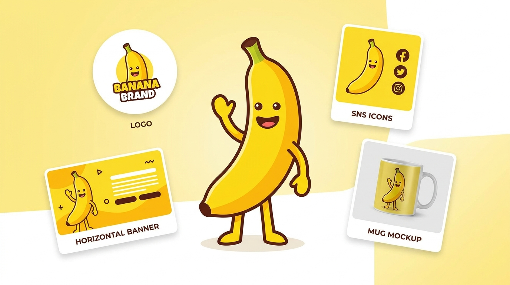
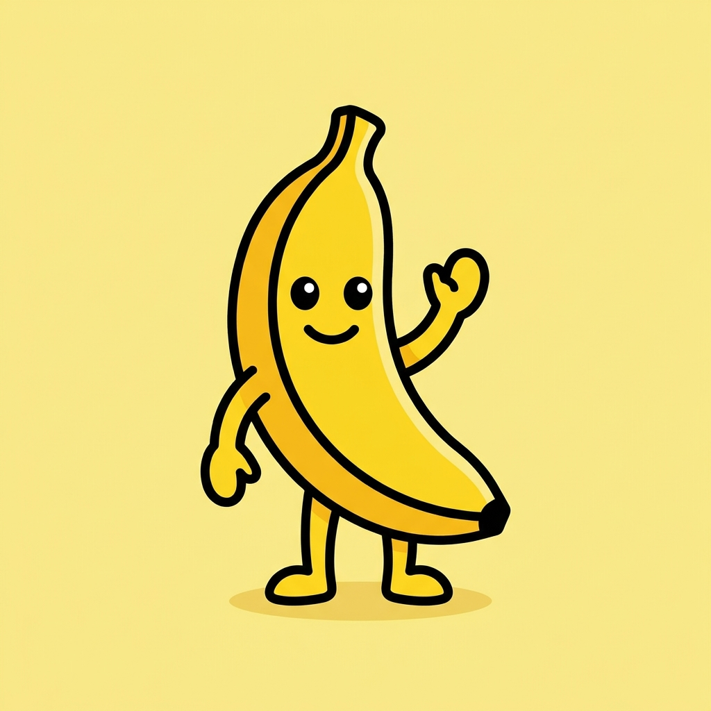
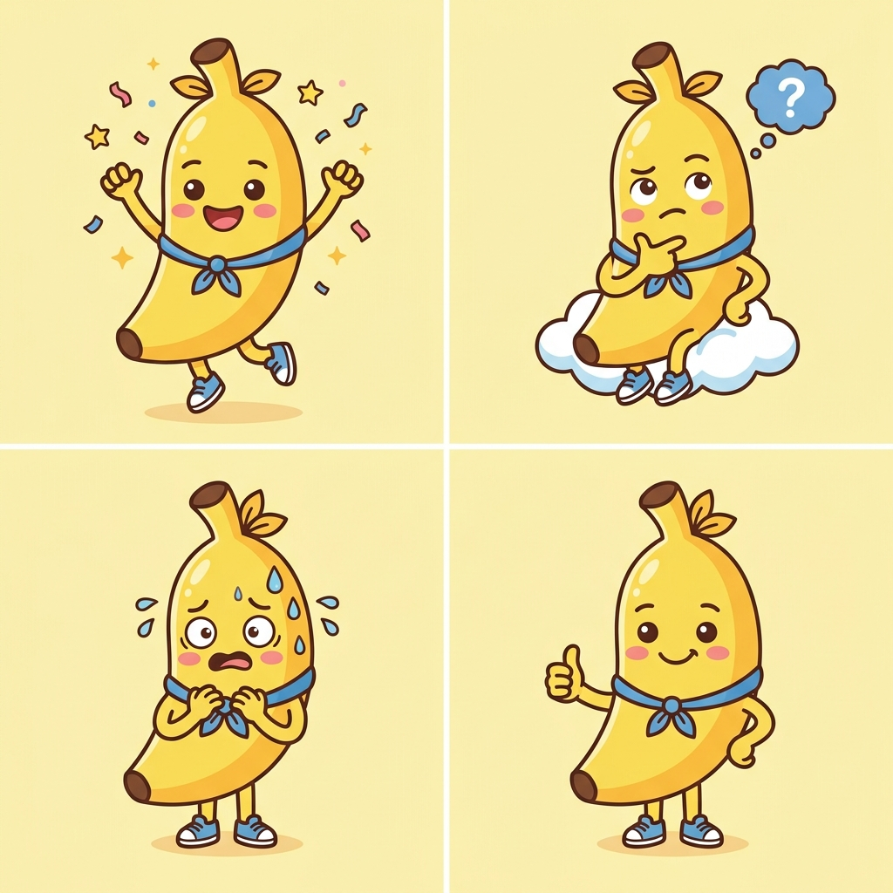
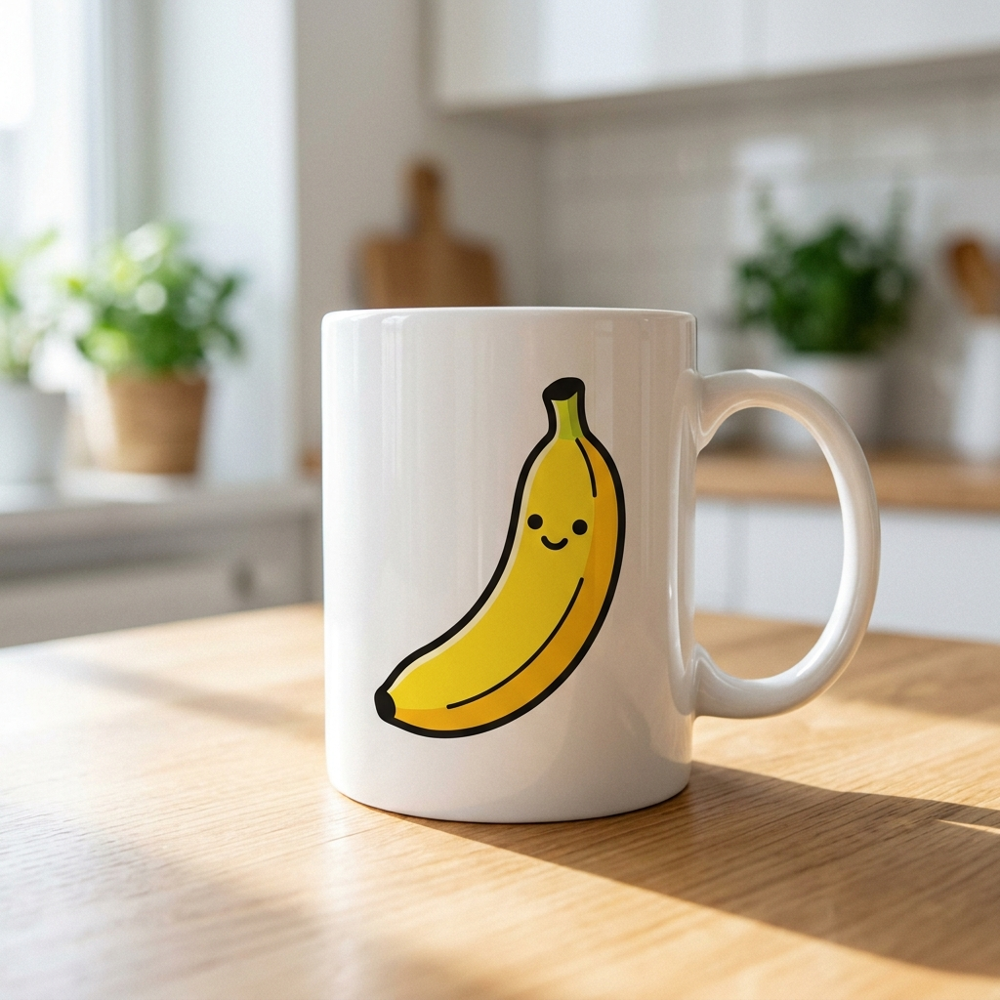
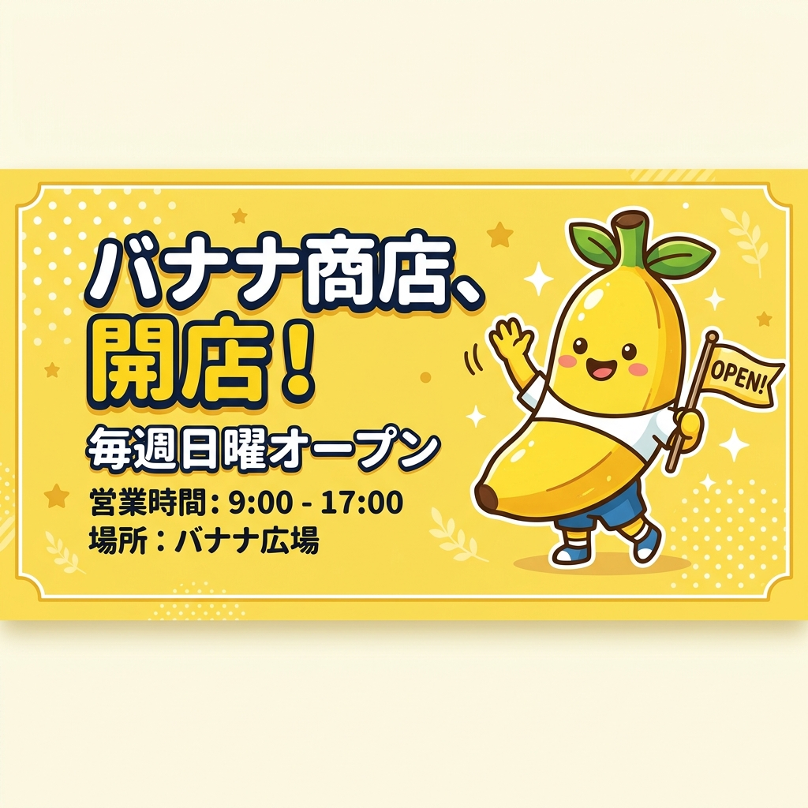
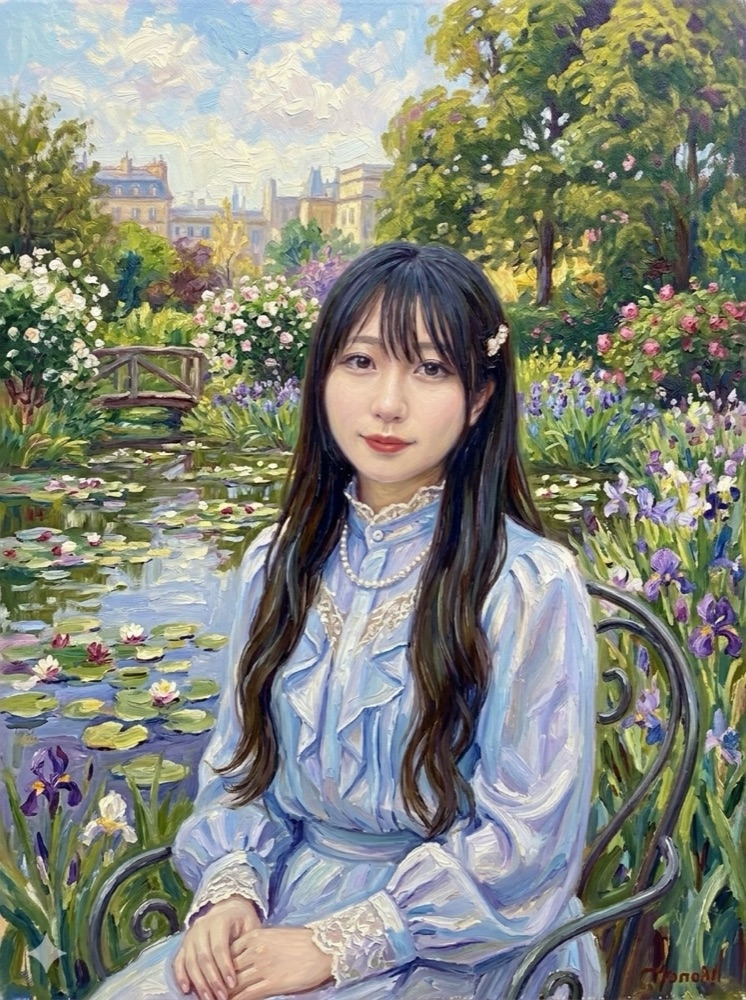
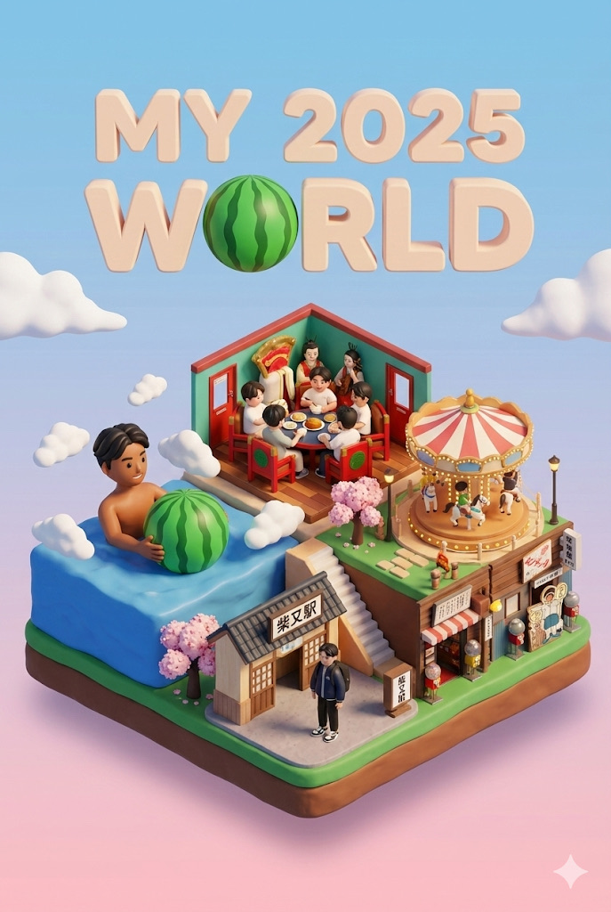
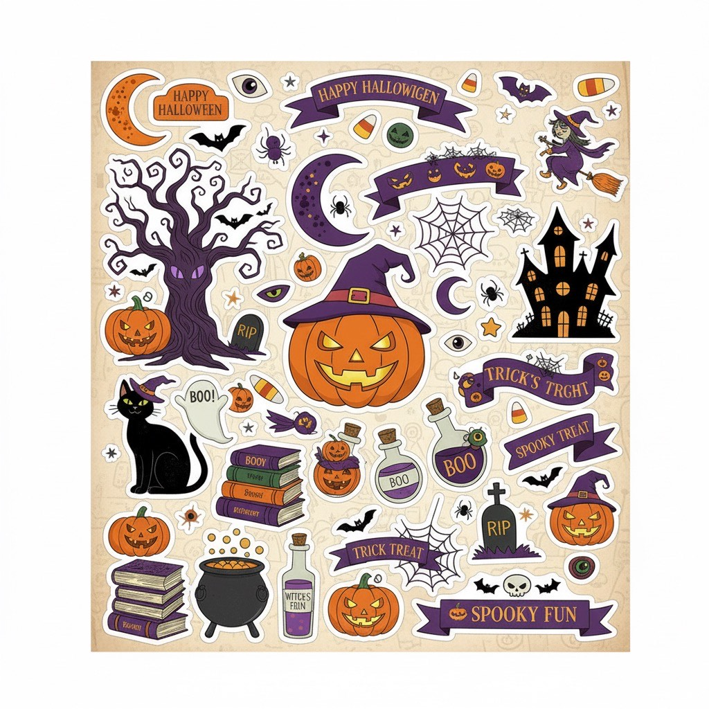
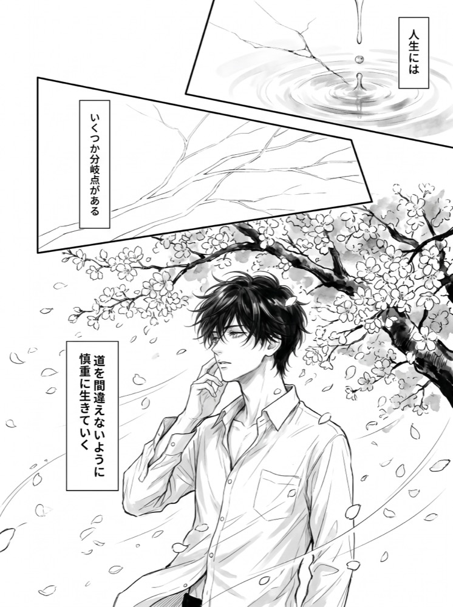
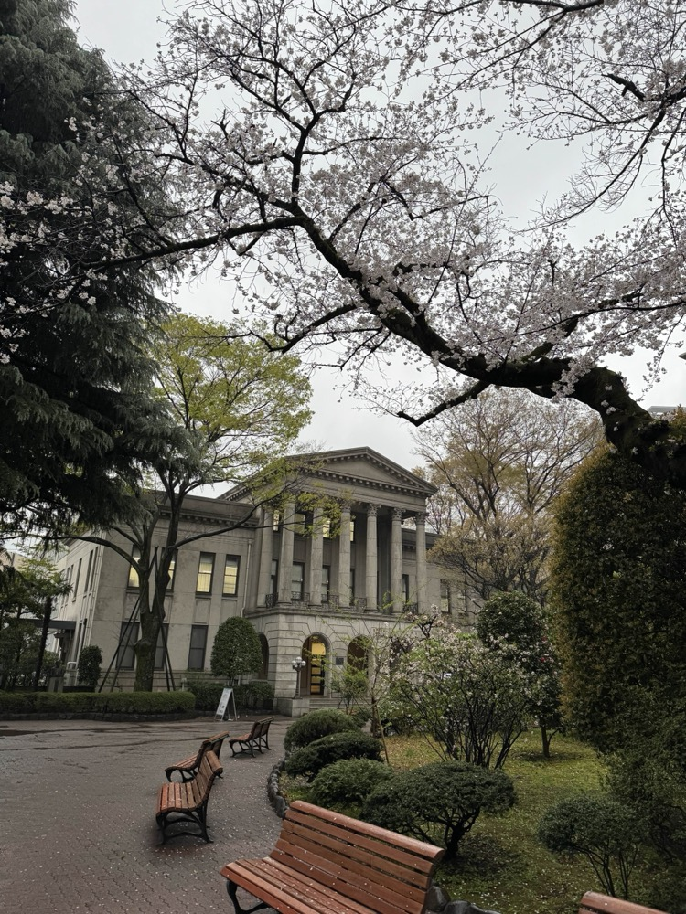

🍌 生成AI活用ハンズオン
～ Nano Banana で作るブランドキット ～
Google の最新画像生成・編集モデル Nano Banana（Gemini 画像モデル）を、ブラウザの Gemini アプリだけで体験します。1 枚の写真から、自分の「ロゴ・アイコン・SNS バナー・商品モックアップ」一式（＝ブランドキット）を作り上げます。コードは書きません。プロンプト（指示文）だけで進められます。
所要時間の目安: 約 60〜90 分

↑ このページで作る「ブランドキット」の完成イメージ（すべて Nano Banana で生成・編集した例）
はじめに
登壇者 自己紹介
新卒よりBtoBクラウドのインフラ/サーバーエンジニア → Web サービス開発 → 現在は生成AI活用の企画・推進を担当
- 社内生成AIコミュニティを 200名 → 2,000名以上 に成長（1年）
- 学生向けハッカソン PM（年間800名規模・2年間）
- 社内外技術勉強会の企画・運営（延べ1,000名以上）
- Qiita 2019年 年間ランキング Top20「Git チートシート」記事が多くのエンジニアに活用される
- 京都市内の私立高校で生成AI活用講義・ワークショップ実施（20名対象）
- 京都市内の大学でハッカソン授業の講師を担当
- 学生向けハッカソン Open Hack U 2020 〜 Hack U 2024 企画・運営 メンター（学生向け大規模ハッカソン）
- SOZOコラボ 公式アンバサダーとして生成AIコミュニティでハンズオン・イベント運営
- コミュニティ運営勉強会でのLT登壇（複数回、知識共有とコミュニティ育成に貢献）

👨🏫 小中学生向けプログラミングスクール講師（副業） | 🎓 アクティブ・ブック・ダイアローグ®︎ 認定ファシリテーター
🍌 そもそも Nano Banana とは？
Nano Banana（ナノバナナ）は、Google が提供する画像生成・編集モデルの愛称です。正式には Gemini の画像生成モデル（Gemini 2.5 Flash Image / Gemini 3 Pro Image。後者は Nano Banana Pro とも呼ばれます）にあたります。テキストで画像を作るだけでなく、「会話しながら画像を直していける」のが最大の特徴です。
会話で編集できる
「背景を夜に」「ロゴを左上へ」のように、言葉で何度でも修正を重ねられます。
同じ人物・物を保てる
同じキャラクターや商品を、ポーズや背景を変えても崩さず描き続けられます（一貫性）。
複数画像を合成できる
「この人物 ＋ この背景 ＋ このロゴ」を 1 枚に自然に組み合わせられます。
文字をきれいに描ける
従来 AI が苦手だった、画像内の正確な文字入れが得意になりました。
🎯 このハンズオンで作るもの
このハンズオンでは、Nano Banana を使って自分（または架空の店・サービス）のブランドキットを作ります。1 つのモチーフを軸に、用途の違う画像を一式そろえるのがゴールです。
- マスコット／ロゴ（Step 1・3 で生成し、ポーズ違いを量産）
- 商品・サービスのモックアップ（Step 2・4 で編集・合成）
- SNS 用バナー（Step 5 で文字入れ）
- アイコン・OGP 画像など一式（Step 6 でまとめて仕上げ）
✅ 必要な環境
- Google アカウント（普段お使いのもので OK）
- Gemini アプリ（ブラウザ） … https://gemini.google.com/ にアクセスできれば OK。スマホアプリでも可。
- 素材写真を 1〜2 枚（任意） … 自分の似顔絵のもとにしたい写真、商品の写真、好きなロゴなど。なくても進められます。
Step 1: Gemini で1枚生成してみる
まずは「テキストから画像を作る」感覚をつかみましょう。難しく考えず、思いついた言葉をそのまま打ち込むのがコツです。
1-1. Gemini を開く
https://gemini.google.com/ にアクセスし、Google アカウントでログインします。入力欄の上または下に、モデルや「画像を作成」系の選択肢が出る場合は画像生成（Nano Banana）が使える状態にしておきます。
1-2. 最初のプロンプトを打つ
今回の「ブランドの主役（マスコット）」を 1 体作ります。下記をそのまま貼り付けて送信してみましょう。あとで全ステップで使い回す主役なので、気に入る 1 枚ができるまで何度か作り直して構いません。
📝 プロンプト例（コピペして送信）かわいいバナナのキャラクターを作ってください。
- 二足歩行で、笑顔で手を振っている
- フラットでシンプルなマスコットデザイン（太めの輪郭線）
- 背景は無地のパステルイエロー
- 正方形（1:1）、ロゴにも使える清潔感のあるテイスト
↑ 上のプロンプトで生成したマスコットの例（この子を「主役」として全ステップで使い回します）
1-3. 言葉で修正してみる
生成された画像が少しイメージと違っても大丈夫。そのまま会話を続けて直していきます。これが Nano Banana の本領です。
📝 修正プロンプト例いい感じです！もう少しだけ目を大きく、色を鮮やかな黄色にしてください。
背景は今のままで OK です。1-4. 画像を保存する
気に入った画像が出たら、画像にマウスを乗せて表示されるダウンロードアイコン（または右クリック →「画像を保存」）で手元に保存します。このマスコットを「main-mascot.png」などの名前で保存しておきましょう。以降のステップで使います。
Step 2: 部分編集（描き込み・差し替え）
次は「すでにある画像の一部だけを直す」編集です。アップロードした写真にも、Step 1 で作ったマスコットにも使えます。
2-1. 画像をアップロードする
入力欄の ＋（画像を追加）アイコンから、編集したい画像をアップロードします。手元の素材写真がなければ、Step 1 で保存したマスコットを使ってください。
2-2. 「ここだけ変えて」と頼む（テキスト指示）
画像全体を作り直すのではなく、チャットで場所と変更内容を具体的に指定して、その部分だけを編集します。
📝 プロンプト例（背景の差し替え）アップロードした画像のキャラクターはそのまま残し、
背景だけを「明るいカフェの店内」に変えてください。
キャラクターの形・色・表情は変更しないでください。このキャラクターの手に、湯気の立つコーヒーカップを持たせてください。
他の部分はそのままにしてください。2-3. ブラシツール（インペイント）で編集箇所を指定する（最新機能）
現在の Gemini アプリ（Web版）では、アップロードした画像または生成された画像をクリックすると、右上に「画像を編集」（ブラシ型のアイコン）が表示されます。これを使うと、より直感的に部分修正が行えます。
- 編集したい画像をクリックして拡大表示します。
- 右上の「画像を編集（ブラシ型アイコン）」をクリックします。
- 変更したい部分（背景や手元など）をブラシで塗りつぶします。
- 入力欄に「ここを明るいカフェの店内に変更して」「コーヒーカップを持たせて」などのプロンプトを入力して送信します。
2-4. 不要なものを消す
写真から邪魔な要素を消すこともできます（いわゆる「消しゴムマジック」的な編集）。
📝 プロンプト例（消す）背景に写っている通行人を自然に消して、
その部分を周囲の風景になじむように補完してください。Step 3: キャラクターを固定する（一貫性）
Nano Banana の真骨頂が「同じキャラクターを、別のシーンでも崩さず描く」こと。Step 1 のマスコットを主役に、ポーズ違い・シーン違いを量産します。
3-1. 主役の画像を添えて指示する
Step 1 のマスコット画像をアップロードした状態で、「この子のまま」と前置きして別シーンを頼みます。
📝 プロンプト例アップロードしたこのバナナのキャラクターを主役にして、
同じ顔・同じ配色・同じ画風のまま、次のシーンを描いてください。
シーン: ノートパソコンの前に座って、楽しそうにタイピングしている
背景: 観葉植物のある明るい部屋
構図: 横長（16:9）3-2. ポーズ違いを一気に並べる
1 回のプロンプトで複数バリエーションを頼むこともできます。LINE スタンプ風の展開です。
📝 プロンプト例（バリエーション）同じキャラクター・同じ画風のまま、表情とポーズ違いを4種類、
1枚の画像に2×2のグリッドで並べてください。
「喜ぶ / 考える / 困る / 親指を立てる」の4パターンでお願いします。
↑ 同じ主役のまま、表情・ポーズ違いを一度に生成した例（LINE スタンプ風の展開）
Step 4: 複数画像を合成する
「人物（またはマスコット）＋ 背景 ＋ 小物」など、複数の画像を 1 枚に組み合わせる編集です。コラージュではなく、自然になじませてくれます。
4-1. 2枚以上の画像をまとめてアップロード
＋アイコンから複数の画像を同時にアップロードします。たとえば「① マスコット」「② 商品写真」の 2 枚。
4-2. どれをどう組み合わせるか伝える
どの画像が何なのかを言葉でひも付けしてあげると、狙い通りに合成されます。
📝 プロンプト例（商品モックアップ）1枚目はマスコットキャラクター、2枚目は商品（マグカップ）です。
このマグカップに、マスコットのイラストをプリントしたデザインにして、
木目のテーブルの上に置いた商品写真風の1枚を作ってください。
照明は自然光、構図は正方形でお願いします。
↑ 「マスコット」＋「マグカップ」の2枚を合成して作った商品モックアップの例
📝 プロンプト例（着せ替え・持ち物の合成）1枚目の人物が、2枚目のTシャツデザインのTシャツを着ている様子を
自然に合成してください。顔と体型は1枚目のままにしてください。Step 5: 文字を入れてバナーにする
従来の画像 AI は文字が苦手でしたが、Nano Banana は正確な文字入れが得意です。SNS バナーやサムネイルを作りましょう。
5-1. 文字を「カギカッコで正確に」指定する
入れたい文字はそのままの表記をカギカッコ等で明示します。フォントの雰囲気や配置も言葉で指定できます。
📝 プロンプト例（SNS バナー）横長（16:9）のSNS用バナーを作ってください。
- 主役: アップロードしたバナナのマスコット（右側に配置）
- 左側に大きく見出しテキスト「バナナ商店、開店！」
- その下に小さめのサブテキスト「毎週日曜オープン」
- 配色はイエロー基調でポップに、文字ははっきり読める太めの書体
↑ 文字入れの例。日本語の「バナナ商店、開店！」「毎週日曜オープン」も崩れず描けます
5-2. 文字だけ直す
文字の打ち間違いや変更も、会話で直せます。
📝 プロンプト例（文字修正）デザインはそのままで、サブテキストだけ
「毎週日曜オープン」から「毎週土日オープン」に変えてください。Step 6: ブランドキットを仕上げる
ここまでで作った主役・シーン・バナーを使って、用途別の画像一式に整えます。これで「自分のブランドキット」の完成です。
6-1. アイコン（正方形）を作る
📝 プロンプト例このマスコットの顔をアップにした、SNSアイコン用の正方形画像を作ってください。
背景は無地のイエロー、シンプルで小さく表示しても分かりやすいデザインで。6-2. ヘッダー／OGP（横長）を作る
📝 プロンプト例同じマスコットと配色で、横長（16:9）のヘッダー画像を作ってください。
中央にサービス名「Banana Shop」のロゴ風テキストを入れて、
余白を広めにとった、清潔感のあるデザインでお願いします。6-3. 仕上げチェック表
下の一覧がそろえば、立派なブランドキットの完成です。作った画像をフォルダにまとめておきましょう。
| 用途 | サイズの目安 | 使ったステップ |
|---|---|---|
| マスコット／ロゴ | 1:1（正方形） | Step 1・3 |
| SNS アイコン | 1:1（正方形） | Step 6-1 |
| 商品モックアップ | 1:1 または 4:3 | Step 2・4 |
| SNS バナー | 16:9（横長） | Step 5 |
| ヘッダー／OGP | 16:9（横長） | Step 6-2 |
📺 さらに深掘り
Nano Banana（Gemini 画像モデル）をさらに使いこなすための参考情報とリンク集です。慣れてきたら、コードからの自動化にも挑戦してみてください。
🧑💻 コードから使う（Gemini API / AI Studio）
画像生成モデルは Google AI Studio で API キーを取得すれば、Python や Node.js から呼び出せます。大量生成や、他システムへの組み込みに向いています。API で呼び出す際の最新モデル名は imagen-3.0-generate-002 です。
import google.generativeai as genai
from PIL import Image
import io
genai.configure(api_key="YOUR_API_KEY")
# Imagen 3 モデルの指定
model = genai.GenerativeModel("imagen-3.0-generate-002")
# 画像生成の実行
result = model.generate_images(
prompt="A cute banana character sitting in front of a laptop, digital art",
number_of_images=1,
aspect_ratio="1:1"
)
# 生成された画像の保存
for i, generated_image in enumerate(result.generated_images):
image = Image.open(io.BytesIO(generated_image.image.image_bytes))
image.save(f"generated_banana_{i}.png")
print(f"画像を保存しました: generated_banana_{i}.png")
- Google AI Studio: https://aistudio.google.com/
- Gemini API 画像生成ドキュメント: https://ai.google.dev/gemini-api/docs/image-generation
📚 公式リファレンス
- Gemini アプリ: https://gemini.google.com/
- Gemini API 公式ドキュメント: https://ai.google.dev/gemini-api/docs
- SynthID（電子透かし）について: https://deepmind.google/technologies/synthid/
🍌 プロンプト早見表
| やりたいこと | 言い回しのコツ |
|---|---|
| 一部だけ直す | 「〇〇だけ変えて、他はそのまま」 |
| 同じキャラを保つ | 「同じ顔・同じ配色・同じ画風のまま」 |
| 合成する | 「1枚目は〜、2枚目は〜」と役割を説明 |
| 文字を入れる | 入れる文字を「カギカッコ」で正確に書く |
| サイズを変える | 「正方形(1:1)」「横長(16:9)」「縦長(9:16)」 |
🎨 みんなの作品事例
Google AI 学生コミュニティの Discord「クリエイティブ・エンタメ」チャンネルに投稿された、Nano Banana（Gemini 画像モデル）で作られた実際の作品を紹介します。「自分でもこんなことができるんだ！」というイメージづくりの参考にしてください。どれもコードを書かず、プロンプト（指示文）だけで作られています。

大好きな画家に肖像画を依頼してみた（モネ風）
自分の写真を「クロード・モネが描いた印象派風の肖像画」に変換。たった1回のプロンプトで、柔らかな光の表現とドレス・真珠のネックレスまで描き足された作品に。さらに Gemini の動画モデルで“動く肖像画”にも発展させています。
Discord で見る →
思い出写真を「3D箱庭世界」にするポスター
3〜5枚の思い出写真を読み込ませ、アイソメトリック（斜め見下ろし）のミニチュアジオラマに再構築。ビーチ・ディナー・ペットなどがピクサー映画のような3Dオブジェに変身します。再現用のプロンプト全文も共有されています。
Discord で見る →
ハロウィンのステッカーを作って印刷してみた
Nano Banana でハロウィン柄のステッカーをデザインし、実際に印刷して可愛いシールに。AI で作ったデザインを“現実のグッズ”に落とし込む、ブランドキットづくりにも通じる活用例です。
Discord で見る →
AI漫画『はじめまして、何百回目の春。』
自作の小説アイデアを Gemini に脚本家役として渡し、Nano Banana Pro 用のプロンプト（YAML形式）を書いてもらってモノクロ漫画を生成。ストーリーやコマ割りは人間、作画と演出補助は AI という分業が見どころです。
Discord で見る →
キャンパスに花火を咲かせてみた
大学の風景写真に Nano Banana で花火を描き加え、さらに Gemini の動画モデル（Veo）で動く花火に発展させた作品。「写真を撮ったあとから、現実には無かった演出を足す」という Nano Banana ならではの使い方です。
Discord で見る →おわりに
本日はご参加いただきありがとうございました！
Nano Banana は「言葉で、何度でも、思い通りに直せる」のが何よりの強みです。今回作ったブランドキットを足がかりに、ぜひ自分の仕事や趣味の場面でも「これ、画像で作れないかな？」と発想してみてください。